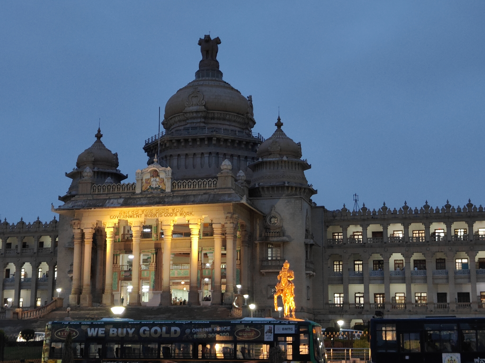
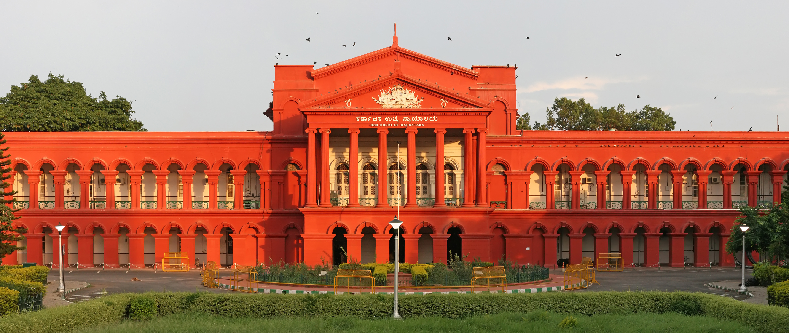
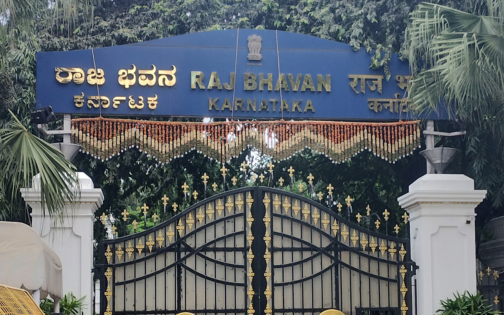
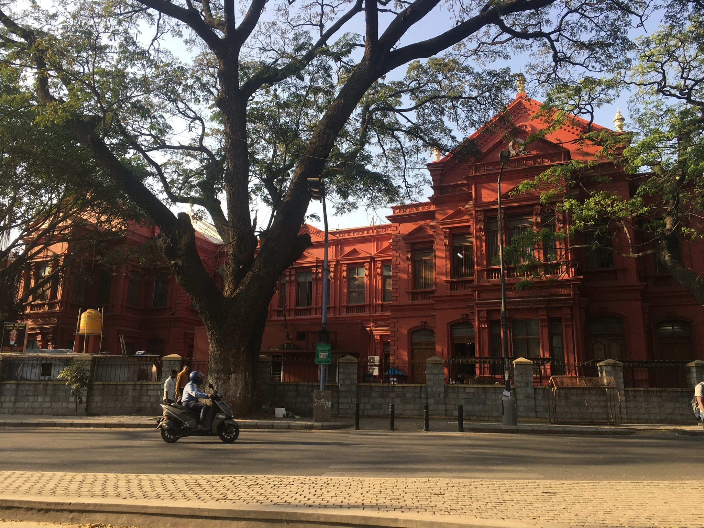
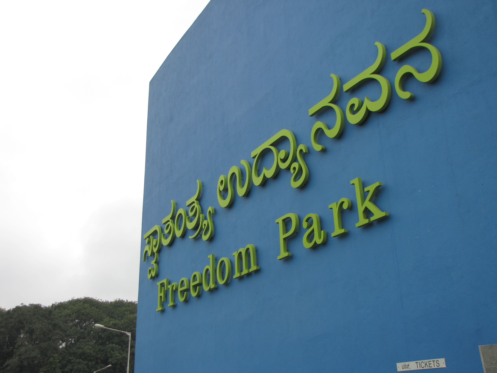

Administrative Landmarks
Click any landmark card below to open an interactive view with multiple photos, history, timings, and visiting details.

Vidhana Soudha
The imposing seat of Karnataka's state legislature, built in grand Neo-Dravidian style with massive granite pillars.
View Details & Gallery →
Attara Kacheri (High Court)
A red-brick colonial masterpiece with Corinthian columns, housing the High Court of Karnataka since 1884.
View Details & Gallery →
Raj Bhavan
The 97-acre Governor's official residence, originally the British Residency, with sprawling gardens and a grand Durbar Hall.
View Details & Gallery →
Mayo Hall
A historic civic landmark near M.G. Road, known for its distinctive colonial-era architecture.
View Details & Gallery →
Freedom Park
A former central jail transformed into a public park, preserving Bengaluru's prison history and civic heritage.
View Details & Gallery →